Toonpack — kandidat interior Barn Asset asli project, tanpa hewan. Preview dinormalisasi ukurannya agar mudah dibandingkan; lihat ukuran meter dan jumlah triangle per prefab. Ini inventory, bukan layout baru.
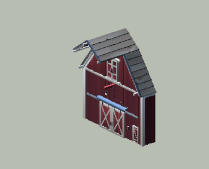
TFP_Barn_05A_Module_1 4854 tris · (7.26, 14.53, 12.94) m Assets/Nature Paradaise/Pack/Toon Series/Toon Farm Pack/Prefabs/Buildings/Barn Building Kit/TFP_Barn_05A_Module_1.prefab 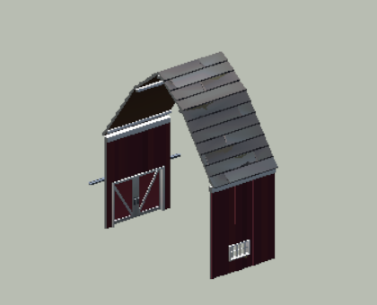
TFP_Barn_05A_Module_2 3088 tris · (8.49, 14.41, 12.99) m Assets/Nature Paradaise/Pack/Toon Series/Toon Farm Pack/Prefabs/Buildings/Barn Building Kit/TFP_Barn_05A_Module_2.prefab 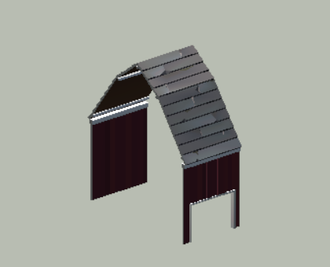
TFP_Barn_05A_Module_3 1419 tris · (6.00, 14.41, 12.88) m Assets/Nature Paradaise/Pack/Toon Series/Toon Farm Pack/Prefabs/Buildings/Barn Building Kit/TFP_Barn_05A_Module_3.prefab 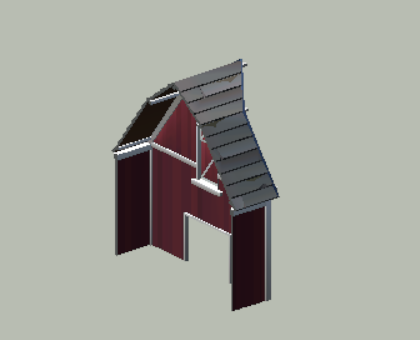
TFP_Barn_05A_Module_4 2857 tris · (6.16, 14.53, 12.94) m Assets/Nature Paradaise/Pack/Toon Series/Toon Farm Pack/Prefabs/Buildings/Barn Building Kit/TFP_Barn_05A_Module_4.prefab 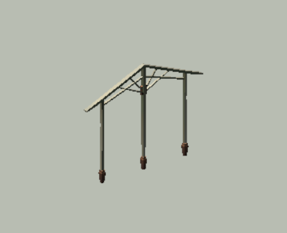
TFP_Hall_Arch_01A 532 tris · (11.27, 8.49, 0.40) m Assets/Nature Paradaise/Pack/Toon Series/Toon Farm Pack/Prefabs/Buildings/Barn Building Kit/TFP_Hall_Arch_01A.prefab 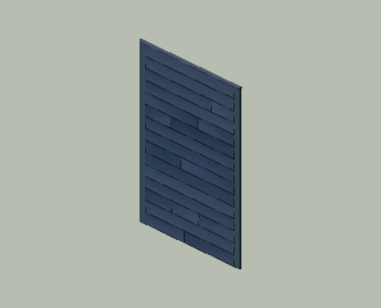
TFP_Hall_Wall_01A 277 tris · (0.12, 5.10, 4.00) m Assets/Nature Paradaise/Pack/Toon Series/Toon Farm Pack/Prefabs/Buildings/Barn Building Kit/TFP_Hall_Wall_01A.prefab 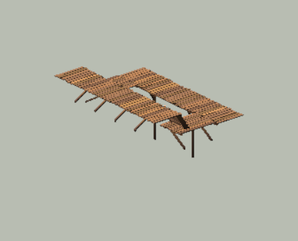
TFP_Barn_05A_Interior 1992 tris · (11.86, 7.91, 15.80) m Assets/Nature Paradaise/Pack/Toon Series/Toon Farm Pack/Prefabs/Buildings/Barn Presets/TFP_Barn_05A_Interior.prefab 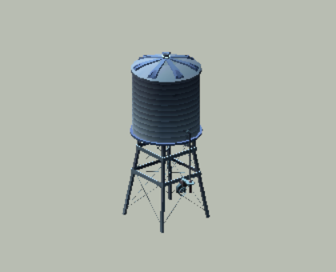
TFP_Water_Tank_01A 2772 tris · (3.50, 8.49, 3.78) m Assets/Nature Paradaise/Pack/Toon Series/Toon Farm Pack/Prefabs/Buildings/Farm Structures/TFP_Water_Tank_01A.prefab 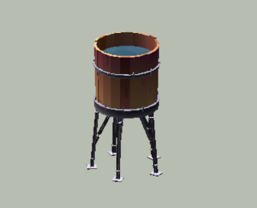
TFP_Water_Tank_03A 2436 tris · (2.48, 4.50, 2.61) m Assets/Nature Paradaise/Pack/Toon Series/Toon Farm Pack/Prefabs/Buildings/Farm Structures/TFP_Water_Tank_03A.prefab 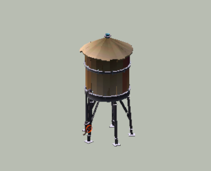
TFP_Water_Tank_04A 2865 tris · (2.78, 5.30, 2.61) m Assets/Nature Paradaise/Pack/Toon Series/Toon Farm Pack/Prefabs/Buildings/Farm Structures/TFP_Water_Tank_04A.prefab 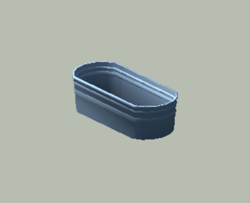
TFP_Trough_01A 388 tris · (0.45, 0.29, 1.02) m Assets/Nature Paradaise/Pack/Toon Series/Toon Farm Pack/Prefabs/Props/Exterior Props/TFP_Trough_01A.prefab 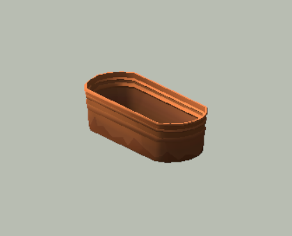
TFP_Trough_01B 446 tris · (0.45, 0.29, 1.02) m Assets/Nature Paradaise/Pack/Toon Series/Toon Farm Pack/Prefabs/Props/Exterior Props/TFP_Trough_01B.prefab 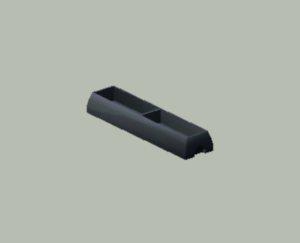
TFP_Trough_02A 164 tris · (0.49, 0.27, 2.03) m Assets/Nature Paradaise/Pack/Toon Series/Toon Farm Pack/Prefabs/Props/Exterior Props/TFP_Trough_02A.prefab 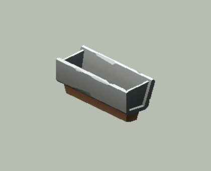
TFP_Trough_03A 297 tris · (0.68, 0.74, 2.00) m Assets/Nature Paradaise/Pack/Toon Series/Toon Farm Pack/Prefabs/Props/Exterior Props/TFP_Trough_03A.prefab 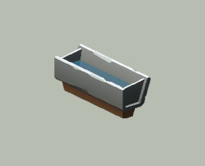
TFP_Trough_04A 301 tris · (0.68, 0.74, 2.00) m Assets/Nature Paradaise/Pack/Toon Series/Toon Farm Pack/Prefabs/Props/Exterior Props/TFP_Trough_04A.prefab 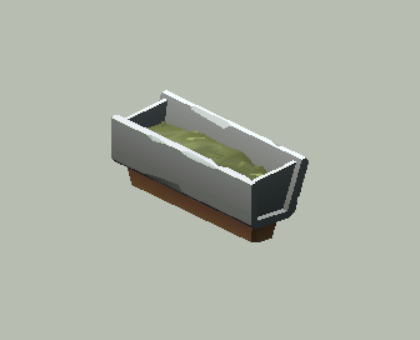
TFP_Trough_05A 455 tris · (0.68, 0.74, 2.00) m Assets/Nature Paradaise/Pack/Toon Series/Toon Farm Pack/Prefabs/Props/Exterior Props/TFP_Trough_05A.prefab 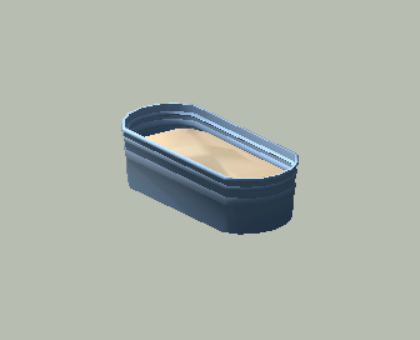
TFP_Trough_06A 418 tris · (0.45, 0.29, 1.02) m Assets/Nature Paradaise/Pack/Toon Series/Toon Farm Pack/Prefabs/Props/Exterior Props/TFP_Trough_06A.prefab 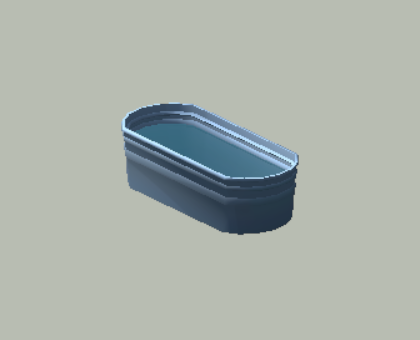
TFP_Trough_07A 400 tris · (0.45, 0.29, 1.02) m Assets/Nature Paradaise/Pack/Toon Series/Toon Farm Pack/Prefabs/Props/Exterior Props/TFP_Trough_07A.prefab 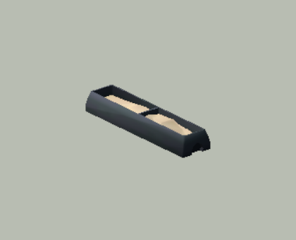
TFP_Trough_08A 221 tris · (0.49, 0.27, 2.03) m Assets/Nature Paradaise/Pack/Toon Series/Toon Farm Pack/Prefabs/Props/Exterior Props/TFP_Trough_08A.prefab 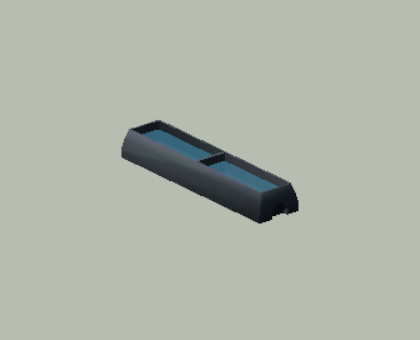
TFP_Trough_09A 166 tris · (0.49, 0.27, 2.03) m Assets/Nature Paradaise/Pack/Toon Series/Toon Farm Pack/Prefabs/Props/Exterior Props/TFP_Trough_09A.prefab 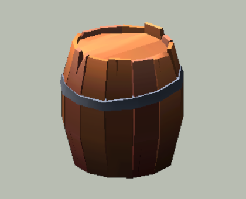
TFP_Wood_Barrel_01A 350 tris · (0.71, 0.74, 0.71) m Assets/Nature Paradaise/Pack/Toon Series/Toon Farm Pack/Prefabs/Props/Exterior Props/TFP_Wood_Barrel_01A.prefab 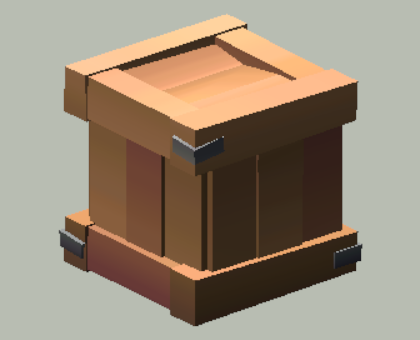
TFP_Wooden_Crate_01A 242 tris · (0.50, 0.49, 0.50) m Assets/Nature Paradaise/Pack/Toon Series/Toon Farm Pack/Prefabs/Props/Exterior Props/TFP_Wooden_Crate_01A.prefab 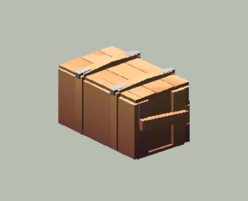
TFP_Wooden_Crate_03A 293 tris · (0.67, 0.61, 1.09) m Assets/Nature Paradaise/Pack/Toon Series/Toon Farm Pack/Prefabs/Props/Exterior Props/TFP_Wooden_Crate_03A.prefab 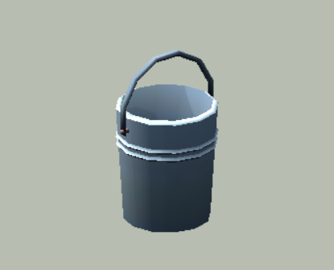
TFP_Bucket_Metal_01A 252 tris · (0.44, 0.65, 0.39) m Assets/Nature Paradaise/Pack/Toon Series/Toon Farm Pack/Prefabs/Props/Farming Props/TFP_Bucket_Metal_01A.prefab 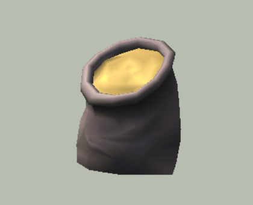
TFP_Cereal_Sack_01A 381 tris · (0.58, 0.63, 0.73) m Assets/Nature Paradaise/Pack/Toon Series/Toon Farm Pack/Prefabs/Props/Farming Props/TFP_Cereal_Sack_01A.prefab 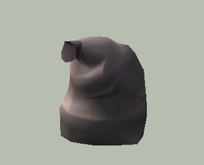
TFP_Cereal_Sack_02A 332 tris · (0.84, 0.98, 0.88) m Assets/Nature Paradaise/Pack/Toon Series/Toon Farm Pack/Prefabs/Props/Farming Props/TFP_Cereal_Sack_02A.prefab 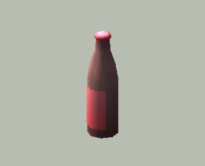
TFP_Bottle_01A 138 tris · (0.12, 0.42, 0.12) m Assets/Nature Paradaise/Pack/Toon Series/Toon Farm Pack/Prefabs/Props/Food & Beverages/TFP_Bottle_01A.prefab 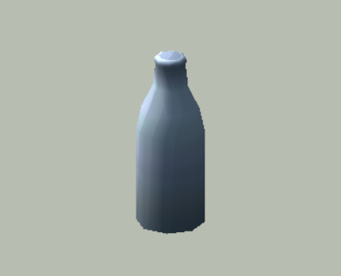
TFP_Milk_Bottle_01A 124 tris · (0.11, 0.29, 0.11) m Assets/Nature Paradaise/Pack/Toon Series/Toon Farm Pack/Prefabs/Props/Food & Beverages/TFP_Milk_Bottle_01A.prefab 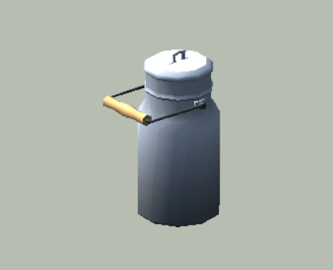
TFP_Milk_Chug_01A 400 tris · (0.35, 0.54, 0.26) m Assets/Nature Paradaise/Pack/Toon Series/Toon Farm Pack/Prefabs/Props/Food & Beverages/TFP_Milk_Chug_01A.prefab 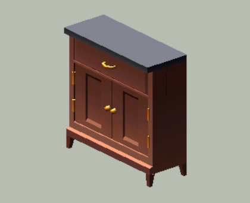
TFP_Bathroom_Cabinet_01A 280 tris · (0.40, 1.00, 1.00) m Assets/Nature Paradaise/Pack/Toon Series/Toon Farm Pack/Prefabs/Props/Furniture & Interior Props/TFP_Bathroom_Cabinet_01A.prefab 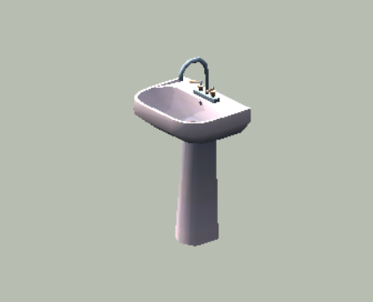
TFP_Bathroom_Sink_01A 318 tris · (0.57, 1.40, 0.76) m Assets/Nature Paradaise/Pack/Toon Series/Toon Farm Pack/Prefabs/Props/Furniture & Interior Props/TFP_Bathroom_Sink_01A.prefab 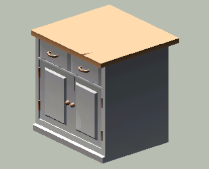
TFP_Kitchen_Cabinet_02A 297 tris · (0.94, 1.00, 1.00) m Assets/Nature Paradaise/Pack/Toon Series/Toon Farm Pack/Prefabs/Props/Furniture & Interior Props/TFP_Kitchen_Cabinet_02A.prefab 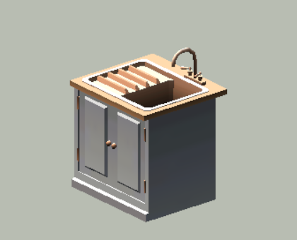
TFP_Kitchen_Cabinet_Sink_01A 455 tris · (0.93, 1.34, 1.00) m Assets/Nature Paradaise/Pack/Toon Series/Toon Farm Pack/Prefabs/Props/Furniture & Interior Props/TFP_Kitchen_Cabinet_Sink_01A.prefab 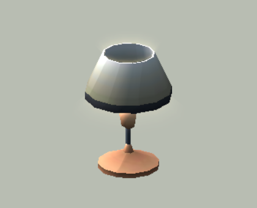
TFP_Lamp_01A 364 tris · (0.51, 0.56, 0.51) m Assets/Nature Paradaise/Pack/Toon Series/Toon Farm Pack/Prefabs/Props/Furniture & Interior Props/TFP_Lamp_01A.prefab 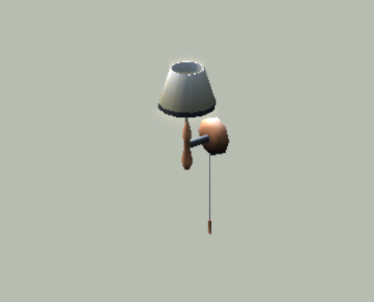
TFP_Lamp_02A 428 tris · (0.51, 1.23, 0.51) m Assets/Nature Paradaise/Pack/Toon Series/Toon Farm Pack/Prefabs/Props/Furniture & Interior Props/TFP_Lamp_02A.prefab 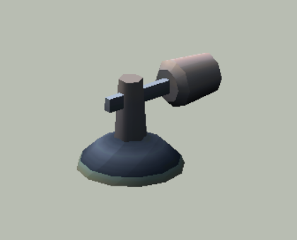
TFP_Lamp_03A 202 tris · (0.45, 0.32, 0.31) m Assets/Nature Paradaise/Pack/Toon Series/Toon Farm Pack/Prefabs/Props/Furniture & Interior Props/TFP_Lamp_03A.prefab 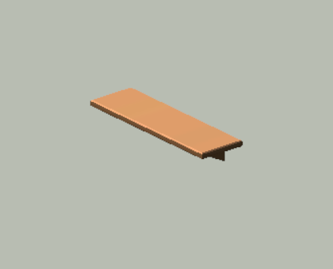
TFP_Shelf_01A 48 tris · (0.30, 0.18, 1.00) m Assets/Nature Paradaise/Pack/Toon Series/Toon Farm Pack/Prefabs/Props/Furniture & Interior Props/TFP_Shelf_01A.prefab 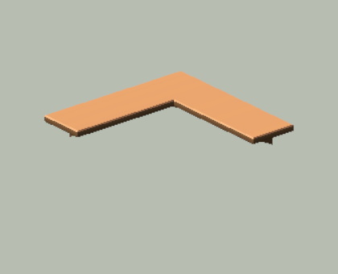
TFP_Shelf_02A 74 tris · (1.00, 0.21, 1.00) m Assets/Nature Paradaise/Pack/Toon Series/Toon Farm Pack/Prefabs/Props/Furniture & Interior Props/TFP_Shelf_02A.prefab 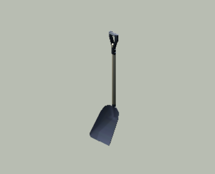
TFP_Shovel_01A 222 tris · (0.36, 1.94, 0.57) m Assets/Nature Paradaise/Pack/Toon Series/Toon Farm Pack/Prefabs/Props/Handheld Tools/TFP_Shovel_01A.prefab 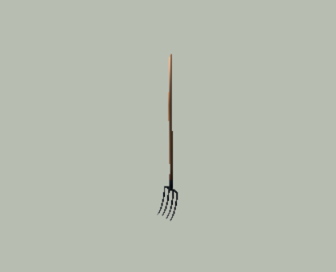
TFP_Spading_Fork_01A 400 tris · (0.14, 2.03, 0.25) m Assets/Nature Paradaise/Pack/Toon Series/Toon Farm Pack/Prefabs/Props/Handheld Tools/TFP_Spading_Fork_01A.prefab 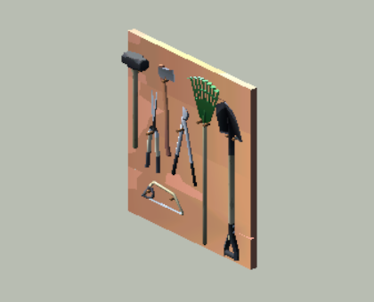
TFP_Tool_Rack_01A 1699 tris · (0.23, 2.03, 2.00) m Assets/Nature Paradaise/Pack/Toon Series/Toon Farm Pack/Prefabs/Props/Tools/TFP_Tool_Rack_01A.prefab 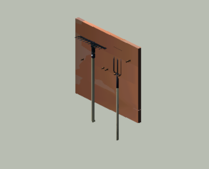
TFP_Tool_Rack_05A 617 tris · (0.29, 2.23, 2.00) m Assets/Nature Paradaise/Pack/Toon Series/Toon Farm Pack/Prefabs/Props/Tools/TFP_Tool_Rack_05A.prefab 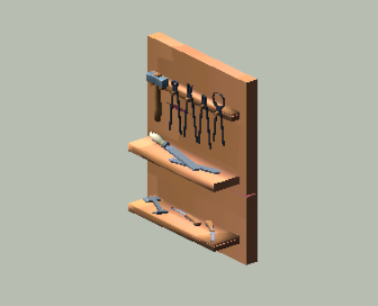
TFP_Tool_Rack_10A 1503 tris · (0.37, 1.50, 1.17) m Assets/Nature Paradaise/Pack/Toon Series/Toon Farm Pack/Prefabs/Props/Tools/TFP_Tool_Rack_10A.prefab 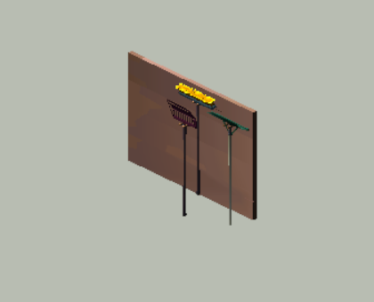
TFP_Tool_Rack_15A 903 tris · (0.30, 2.38, 3.16) m Assets/Nature Paradaise/Pack/Toon Series/Toon Farm Pack/Prefabs/Props/Tools/TFP_Tool_Rack_15A.prefab 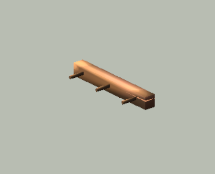
TFP_Tool_Rack_19A 66 tris · (0.26, 0.13, 1.02) m Assets/Nature Paradaise/Pack/Toon Series/Toon Farm Pack/Prefabs/Props/Tools/TFP_Tool_Rack_19A.prefab 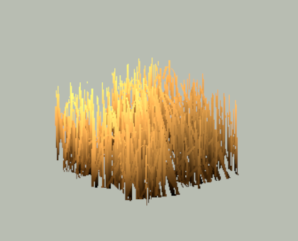
TFP_Hay_Patch_01A 268 tris · (2.28, 1.52, 2.32) m Assets/Nature Paradaise/Pack/Toon Series/Toon Farm Pack/Prefabs/Vegetation/Agricultural Plants/TFP_Hay_Patch_01A.prefab 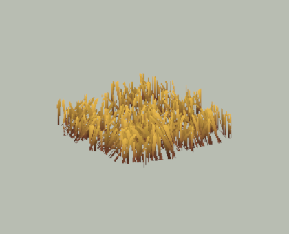
TFP_Hay_Patch_02A 312 tris · (2.31, 0.51, 2.34) m Assets/Nature Paradaise/Pack/Toon Series/Toon Farm Pack/Prefabs/Vegetation/Agricultural Plants/TFP_Hay_Patch_02A.prefab 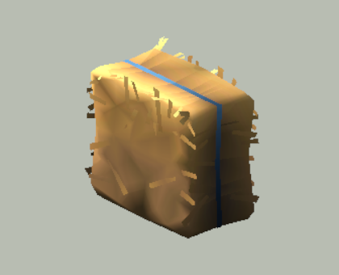
TFP_Hay_Bale_01A 888 tris · (0.38, 0.49, 0.58) m Assets/Nature Paradaise/Pack/Toon Series/Toon Farm Pack/Prefabs/Vegetation/Hay/TFP_Hay_Bale_01A.prefab 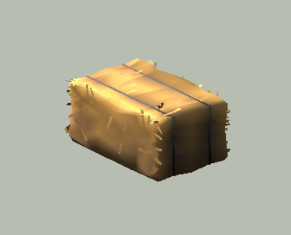
TFP_Hay_Bale_02A 1324 tris · (0.64, 0.48, 0.98) m Assets/Nature Paradaise/Pack/Toon Series/Toon Farm Pack/Prefabs/Vegetation/Hay/TFP_Hay_Bale_02A.prefab 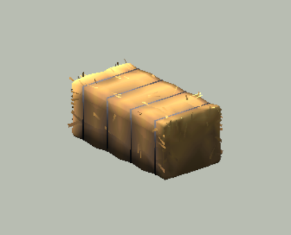
TFP_Hay_Bale_03A 1776 tris · (0.70, 0.60, 1.29) m Assets/Nature Paradaise/Pack/Toon Series/Toon Farm Pack/Prefabs/Vegetation/Hay/TFP_Hay_Bale_03A.prefab TFP_Hay_Bale_04A 2366 tris · (1.38, 1.04, 2.70) m Assets/Nature Paradaise/Pack/Toon Series/Toon Farm Pack/Prefabs/Vegetation/Hay/TFP_Hay_Bale_04A.prefab TFP_Hay_Clump_01A 459 tris · (2.00, 0.94, 2.71) m Assets/Nature Paradaise/Pack/Toon Series/Toon Farm Pack/Prefabs/Vegetation/Hay/TFP_Hay_Clump_01A.prefab TFP_Hay_Silage_01A 1595 tris · (5.05, 1.11, 4.88) m Assets/Nature Paradaise/Pack/Toon Series/Toon Farm Pack/Prefabs/Vegetation/Hay/TFP_Hay_Silage_01A.prefab Triangle counts sum all MeshFilters; if a prefab contains an LODGroup this includes all LODs, not one active LOD.